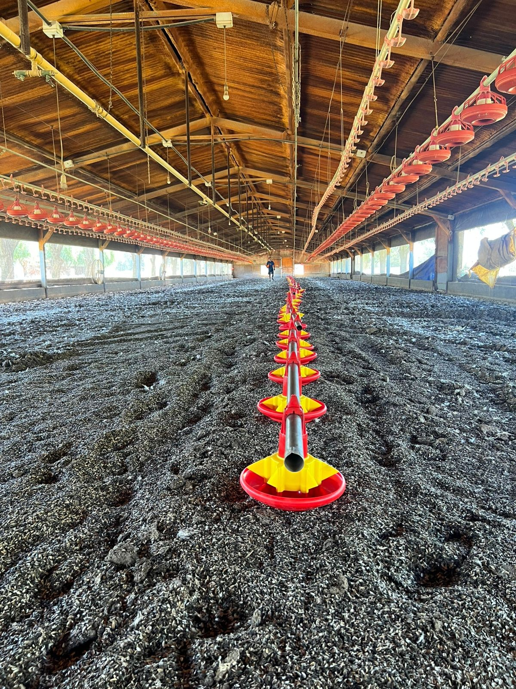
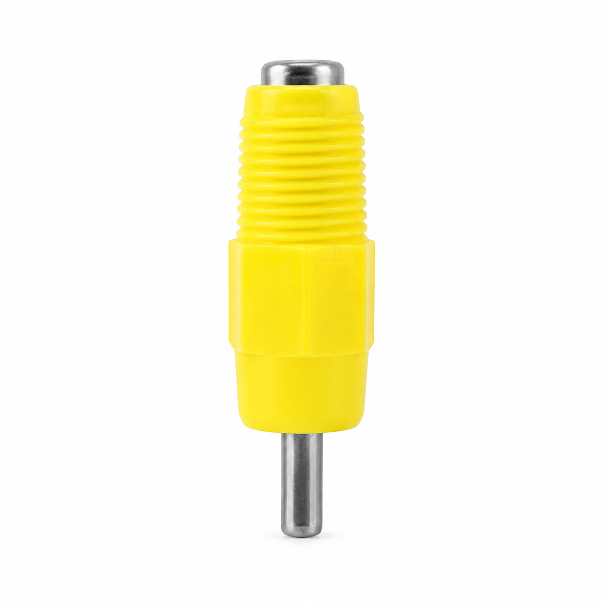
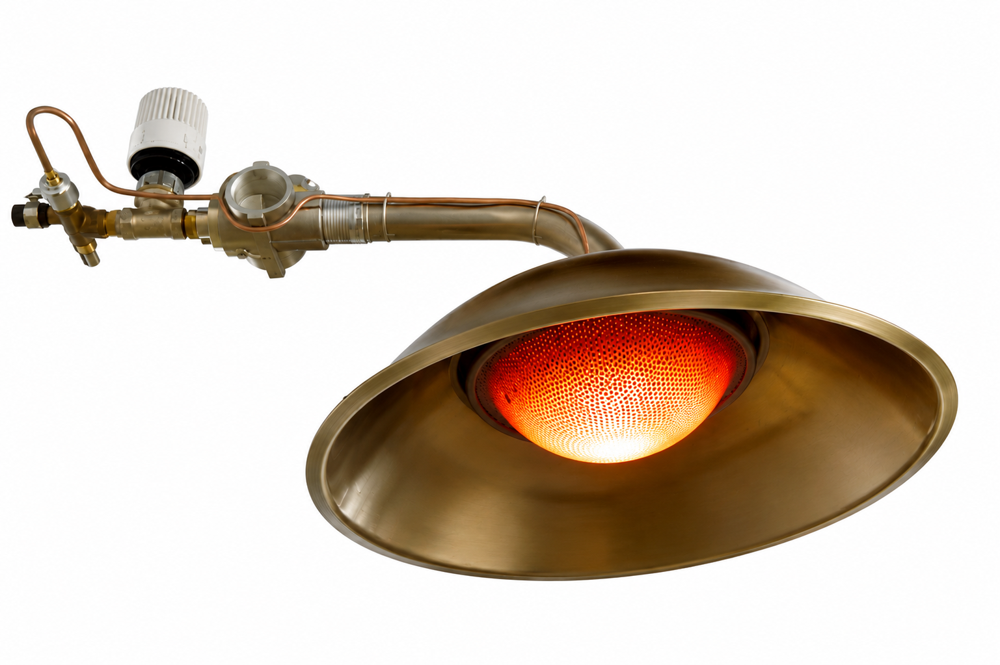

Equipamiento para
Producción de Carne de Pollo
CRÍA • CRECIMIENTO • ENGORDE
Soluciones profesionales para granjas de pollos de engorde. Diseñamos e instalamos equipamiento para sistemas avícolas modernos.
Consultanos y potenciá tu granjaEtapas de producción de carne
Equipamiento diseñado para acompañar cada etapa del crecimiento de las aves.
Cría
Equipamiento preparado para las primeras semanas de vida, favoreciendo el confort y desarrollo de los pollitos.
Crecimiento
Sistemas orientados a mantener condiciones adecuadas para un crecimiento uniforme y eficiente.
Engorde
Equipamiento diseñado para optimizar el manejo, el consumo de alimento y el rendimiento productivo.
Sistemas de producción avícola
Soluciones diseñadas para optimizar la alimentación, el ambiente y el manejo dentro de galpones de pollos de engorde.

Sistema de alimentación
Línea con motorreductor (sinfín) que distribuye el alimento de forma automática y uniforme en todo el galpón.

Sistema de climatización
Soluciones para mantener condiciones ambientales adecuadas durante las diferentes etapas de crecimiento.

Sistema de ventilación
Equipamiento para favorecer la renovación del aire y mantener un ambiente adecuado dentro del galpón.

Sistema de cortinas
Cortinas para regular la apertura lateral del galpón y favorecer el control del ambiente.
Equipamiento destacado – Producción de Carne
Algunos de los equipos más utilizados en granjas de pollos de engorde.

Bebedero copa
Agua continua y de fácil acceso, con distribución uniforme en toda la instalación.

Comedero de plato giratorio
Sistema con motorreductor planetario que reparte el alimento de forma pareja y reduce el desperdicio en cada plato.

Niples para aves
Sistema de bebida que proporciona agua de manera controlada y facilita la higiene.

Bebedero de campana
Alternativa al sistema nipple, ideal para primeras semanas de vida y granjas de manejo tradicional.

Campana criadora
Fuente de calor para la etapa de cría, clave para el confort térmico de los pollitos en sus primeros días.

Malla antipájaros
Solución para proteger las aberturas del galpón y evitar el ingreso de aves externas.
Servicios
Acompañamos tu proyecto desde el diseño hasta la puesta en marcha.

Diseño y asesoramiento técnico
Planificación de instalaciones y distribución del equipamiento según las necesidades de cada proyecto.

Instalación de equipamiento
Montaje profesional de sistemas de alimentación, bebida, ventilación y climatización.

Obra civil
Construcción y adecuación de instalaciones para sistemas modernos de producción avícola.